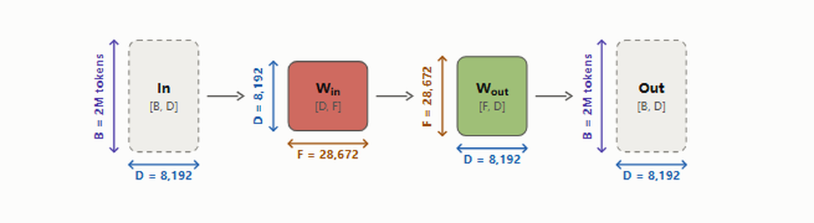
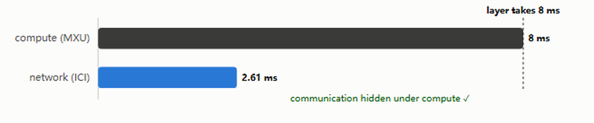
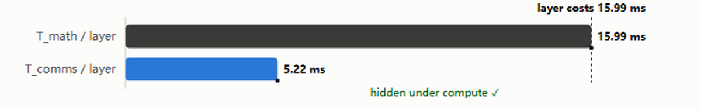
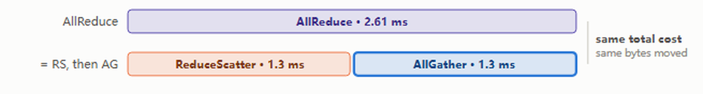
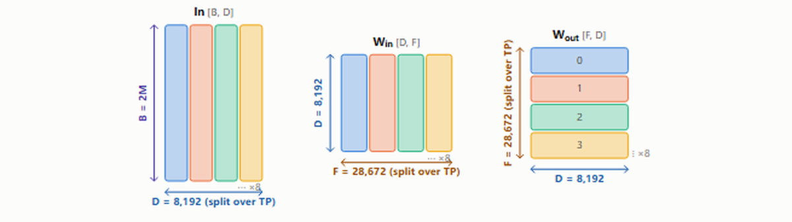

这篇是Edward Z. Yang（PyTorch核心开发者）对Google DeepMind《How to Scale Your Model》Part 5的「可探索」改编：每个数字都能拖拽、实时计算。它回答了训练大模型时的核心问题：增加芯片能否线性提升吞吐？什么时候通信会成为瓶颈？
文章覆盖五类常见并行方案：纯数据并行、全分片数据并行（FSDP/ZeRO）、张量并行、专家并行（MoE）和流水线并行。对每种都给出通信成本分析、何时成为瓶颈的判据，以及一批可拖拽的实时计算可视化。
核心洞察是「roofline」思维：每个方案都在两座钟之间赛跑：MXU的算力时钟vs网络的通信时钟。通信若能藏进计算之下就免费，戳出计算就浪费硅。
「模型缩放」的目标是增加训练或推理用芯片数，同时实现吞吐量的成比例线性提升：这称为强扩展。单芯片性能取决于内存带宽与FLOPs的权衡；集群级性能则取决于通过把芯片间通信与有用FLOPs重叠来隐藏通信。这不平凡：增加芯片数增加了通信负载，同时减少了可用于隐藏它的每设备计算量。
如第3节所见，分片矩阵乘法常需要昂贵的AllGather或ReduceScatter，会阻塞TPU做有用工作。本节目标是找出这些何时变得「太贵」。
我们讨论五种常见并行方案：纯数据并行、FSDP/ZeRO分片、张量并行（也称模型并行）、专家并行（MoE）和流水线并行。对每种方案展示我们付出的通信成本、以及该成本在哪个点开始成为计算瓶颈。聚焦通信上界：因为内存容量约束虽重要，但用重计算（激活检查点）和大量芯片预训练时通常不构成约束。本节可以只关注芯片间通信成本：只要单芯片batch足够大，HBM到MXU的数据传输已与计算重叠。
我们用以下记号简化计算。
模型参数记号：D是d_model（隐藏维/残差流维）；F是d_ff（feedforward维）：按本页约定指一个专家的宽度（稠密时 = d_ff），数学运行在k·F上、权重持有E·F、原文方程是E=k=1的情形；B是batch维（batch中token数，总量非每设备）；T是序列长度；L是层数。
| 记号 | 含义（模型参数） |
|---|---|
| D | d_model（隐藏维/残差流维） |
| F | d_ff（feedforward维）；指一个专家的宽度（稠密时 = d_ff） |
| B | Batch维（batch中token数；总量，非每设备） |
| T | 序列长度 |
| L | 模型层数 |
硬件特征记号：C是每芯片FLOPS/s；W是网络带宽（每TPU mesh轴双向 / GPU或节点单向出口，常用W_ici或W_dcn下标）；DP是数据并行mesh轴的芯片数（原文的X）；TP是张量并行mesh轴的芯片数（原文的Y）；Z是第三mesh轴的芯片数；PP是流水线阶段数（pipelining节的Z）；EP是专家并行度（第12章的Z）。
| 记号 | 含义（硬件特征） |
|---|---|
| C | FLOPS/s每芯片 |
| W | 网络带宽（每TPU mesh轴双向 / GPU或节点单向出口，常写作W_ici或W_dcn） |
| DP | 数据并行mesh轴的芯片数（原文的X） |
| TP | 张量并行mesh轴的芯片数（原文的Y） |
| Z | 第三mesh轴的芯片数 |
| PP | 流水线阶段数（pipelining节的Z） |
| EP | 专家并行度（第12章的Z） |
原文例子是稠密LLaMA时代的模型；前沿已转向Mixture-of-Experts。形状取自各模型在Hugging Face发布的config.json，参数总量取自其safetensors元数据（2026年8月检索）。E和k计入共享专家，所以k·F是这些架构代表的激活宽度。
跨受支持的实时MoE预设，每专家F只是2,048或3,072，激活宽度k·F聚类在15k到25k之间：即使总参数从几千亿到几万亿。由于本章后面的张量并行界随激活宽度k·F缩放，这个聚类解释了为什么TP极限在所有前沿预设上看起来如此相似。K3保留为参考行，但其latent-MoE形状故意不加载进公式。
| 模型 | 参数 | D | F | 激活k·F | L | E | k |
|---|---|---|---|---|---|---|---|
| LLaMA-3 70B（章默认） | 70.6B | 8,192 | 28,672 | 28,672 | 80 | 1 | 1 |
| LLaMA-2 13B | 13.0B | 5,120 | 13,824 | 13,824 | 40 | 1 | 1 |
| Gemma 7B | 8.54B | 3,072 | 24,576 | 24,576 | 28 | 1 | 1 |
| DeepSeek-V3 | 685B | 7,168 | 2,048 | 18,432 | 61 | 257 | 8+1 |
| Kimi K3（仅参考） | 2.78T | 7,168 | 3,072 | 55,296 | 93 | 896+2 | 16+2 |
| GLM-5.2 | 753B | 6,144 | 2,048 | 18,432 | 78 | 257 | 8+1 |
| DeepSeek-V4-Pro | 1.60T | 7,168 | 3,072 | 21,504 | 61 | 385 | 6+1 |
| Qwen3.8-2.4T-A95B | 2.45T | 8,192 | 2,048 | 22,528 | 92 | 513 | 10+1 |
| Inkling | 952B | 6,144 | 3,072 | 24,576 | 66 | 258 | 6+2 |
| MiniMax-M3 | 427B | 6,144 | 3,072 | 15,360 | 60 | 129 | 4+1 |
本页计算的每个硬件数字都来自spec和持续测量，每个值可追溯到厂商规格表、已发表测量或本书自己的基准（2026-08-17检索）。方法：NVIDIA数据表宣传稀疏FLOP/s，这里减半为稠密；「双向」带宽减半为每方向；每GPU scale-out是节点NIC总量除以GPU数。≈ 标记估计值。
注意引文逼迫的妙处：TPU的持续性能远接近其纸面数字，而受功耗限制的NVIDIA部件差得更远。
| 硬件 | C（稠密bf16） | ×持续 | W链路 | ×实测 | W scale-out | HBM |
|---|---|---|---|---|---|---|
| TPU v5p | 459 TF | 0.72 | 180 GB/s | 0.95 | 6.25 GB/s | 96 GB |
| TPU v5e | 197 TF | ≈0.67 | 90 GB/s | ≈0.95 | 3.13 GB/s | 16 GB |
| H100（8-GPU节点） | 989 TF | 0.73 | 450 GB/s | 0.82 | 50 GB/s | 80 GB |
| B200（8-GPU节点） | 2.25 PF | 0.69 | 900 GB/s | ≈0.82 | 50 GB/s | 180 GB |
| GB200 NVL72 | 2.5 PF | ≈0.70 | 900 GB/s | ≈0.82 | ≈50 GB/s | 186 GB |
| GB300 NVL72 | 2.5 PF | ≈0.70 | 900 GB/s | ≈0.82 | 100 GB/s | 288 GB |
| H800（DeepSeek） | 989 TF | ≈0.73 | 200 GB/s | 0.80 | 50 GB/s | 80 GB |
为简化，我们把Transformer近似为MLP块栈：attention对较大模型是FLOPs的较小部分（见第4节）。忽略gating matmul，每层简化为两个矩阵：Win（上投影，bf16[D,F]）和Wout（下投影，bf16[F,D]），输入In: bf16[B,D]。

在这个简化下每层持有2·D·E·F权重（稠密E=1即2·D·F），整个栈2·D·E·F·L参数：即本页通信算术里的「P」。内存问题不同：真实checkpoint持有gated MLP的第三个矩阵和attention栈，所以内存仪表按P_w ≈ 3·D·E·F·L + 2.5·D²·L计价权重。
无并行完整算法。Forward需要算Loss[B]：① Tmp[B,F] = In[B,D]·Win[D,F]；② Out[B,D] = Tmp[B,F]·Wout[F,D]；③ Loss[B] = …。Backward需要算dWout[F,D]、dWin[D,F]：① dOut[B,D] = …；② dWout[F,D] = Tmp[B,F]·dOut[B,D]；③ dTmp[B,F] = dOut[B,D]·Wout[F,D]；④ dWin[D,F] = In[B,D]·dTmp[B,F]；⑤ dIn[B,D] = dTmp[B,F]·Win[D,F]（前层需要）。
四种方案各由In、Win、Wout、Out的一个分片方式唯一定义。下标在数组维度上命名它沿哪个mesh轴切开（In[B_DP,D] 表示batch维被切成DP片、每片一芯片），下标在 · 上命名被收缩的维度。
数据并行：激活沿batch分片，参数和优化器状态在每设备复制。通信只发生在反向传播。In[B_DP,D]·Win[D,F]·Wout[F,D]→Out[B_DP,D]。
FSDP（ZeRO-3）：激活沿batch分片（如纯数据并行），参数沿同一mesh轴分片、在forward前临时AllGather。优化器状态也沿batch分片，减少重复内存。In[B_DP,D]·Win[D_DP,F]·Wout[F,D_DP]→Out[B_DP,D]。
张量并行（Megatron/模型并行）：激活沿D（d_model）分片，参数沿F（d_ff）分片。每个块前后做AllGather和ReduceScatter。与FSDP兼容。In[B,D_TP]·Win[D,F_TP]·Wout[F_TP,D]→Out[B,D_TP]。
流水线并行：权重沿层维分片，激活微批化并沿层维滚动。流水线阶段间通信极小（只移动激活一跳）。
注意四个方案的共同点：跑的是相同的matmul，FLOPs从不改变：只改变数组住哪、乘之间必须跑哪些集合通信。所以对每个方案问题总是：那些集合通信能否藏在matmul后面。
当芯片处理我们Transformer的一层时，两座钟同时运行。算力时钟：MXU必须啃完这层分担的FLOPs：B个token在DP个芯片上摊开，即4·B·D·k·F/(DP·C) 每层（k·F因为一个token只乘过它激活的k个专家）。网络时钟：方案移动的字节必须挤过互连W_ici。

关键：当实现成功调度集合通信时，两座钟可以重叠：网络搬字节的同时MXU在乘。在这个显式假设下，一层成本是max（两座钟），不是和。藏在算力钟下的通信是免费的；戳出算力钟的通信让硅闲置。
这个开关捕捉了核心区分：传输的是什么？如果传输的是权重：2·D·E·F字节（每个E专家，激活与否）：数据并行和FSDP的网络钟固定，算力钟随每芯片批大小扩展：大batch让算力赢、通信被藏。如果传输的是激活：2·B·D字节：张量并行里batch出现在两座钟上并抵消。隐藏取决于模型形状（token乘过的宽度k·F）。
现在roofline本身。第1节里单芯片仅当它的算术强度（每字节触碰的FLOPs）超过FLOP速度与内存带宽之比时才计算受限。同样的逻辑在这里高一级适用，互连扮演内存。对传权重的方案，FLOPs随B/DP扩展而字节不扩展，所以B/DP是稠密模型token形式的网络算术强度；对这个等宽MoE模型，比例强度是 (B/DP)·k/E。roofline的山脊在 (E/k)·(C/W) tokens/芯片：E/k因子因为MoE移动全部E个专家的权重而FLOPs只碰k个。
反复出现的问题：这个方案的字节能装进这个方案的FLOPs吗？对核心roofline，答案比较每芯片batch或模型维度与C/W。专家并行和流水线用同样的直觉，各有自己的流量和调度注意事项。
DP个芯片共享B个token的batch，每个模型副本看到B/DP个token。语法：In[B_DP,D]·Win[D,F]·Wout[F,D]→Out[B_DP,D]。
完整算法（Forward）：① Tmp[B_DP,F] = In[B_DP,D]·Win[D,F]；② Out[B_DP,D] = Tmp[B_DP,F]·Wout[F,D]；③ Loss[B_DP] = …。
完整算法（Backward）：① dOut[B_DP,D] = …；② dWout[F,D]{UDP} = Tmp[B_DP,F]·dOut[B_DP,D]（UDP = 未沿DP轴归约，每芯片持自己batch切片的偏和）；③ dWout[F,D] = AllReduce(dWout[F,D]{UDP})（不在关键路径，可异步）；④ dTmp[B_DP,F] = dOut[B_DP,D]·Wout[F,D]；⑤ dWin[D,F]{UDP} = In[B_DP,D]·dTmp[B_DP,F]；⑥ dWin[D,F] = AllReduce(dWin[D,F]{UDP})（不在关键路径，可异步）；⑦ dIn[B_DP,D] = dTmp[B_DP,F]·Win[D,F]（前层需要）。
注意forward无通信：全在backward！backward还有好性质：AllReduce不在「关键路径」，意味着每个AllReduce可以在方便时执行、不阻塞后续操作。整体通信成本仍可能成为瓶颈（若超过总计算成本），但从实现角度看宽容得多。后面会看到模型/张量并行没有这个性质：它的集合通信阻塞紧邻的下一个matmul。
为什么做？纯数据并行沿batch维拆分激活，降低激活内存压力，允许几乎任意增大batch（只要有更多芯片拆分）。训练中激活常主导内存，这很有帮助。
为什么不？纯数据并行不降低模型参数或优化器状态的内存压力：对参数+优化器状态放不进单TPU的大模型几乎无用。若参数用bf16、优化器状态用fp32 Adam（Adam存参数、一阶二阶累加器；参数bf16 + 状态fp32 = 2+8 = 10字节/参数），能装的最大模型是TPU内存/10参数：TPUv5p单芯片约几亿参数。
Takeaway：用Adam和纯数据并行能训练的最大模型有num_params = 每设备HBM/10。对TPU v5p约几亿参数（不含梯度检查点，所以实际不可用：batch为1 token的绝对下限）。要让真实模型训练可用，需要至少部分分片模型参数或优化器。
如上，每层两个AllReduce、各2·D·F字节（bf16权重）。网络这里携带的是权重梯度：2·D·E·F每矩阵（全部E专家的梯度，不只token用的k个）：其大小与batch无关。这是roofline里的传权重情形：batch无关的通信成本，足够大的每芯片batch总能藏住。

设C = 每芯片FLOPs、W_ici = 双向每轴ICI带宽（或每GPU单向NVLink出口）、DP = batch分片数。算matmul时间T_math和所需通信时间T_comms（此方案forward无通信，只算backward）。
通信时间：1D mesh上AllReduce时间 = 2·总字节/W_ici。需对Win和Wout都AllReduce，每层2个AllReduce、各2·D·F字节，所以T_comms = 2·2·2·D·F/W_ici = 8·D·F/W。注意：没有B。
Matmul时间：每层forward两个matmul、backward四个，各2(B/DP)·D·F FLOPs，所以T_math = 2·2·2·B·D·F/(DP·C) = 8·B·D·F/(DP·C)：随每芯片batch B/DP扩展（FLOPs携带k·F，激活宽度）。
重叠后每层时间 = max(T_math, T_comms) = 8·D·F·max(B/(DP·C), 1/W)。计算受限当T_math/T_comms > 1，即B/DP > C/W。
对TPUv5p，C/W = 2550，所以每芯片batch必须至少2550才避免通信受限：这就是著名的2550常数。若把三轴都用于纯数据并行，带宽×3，可降到每TPU 850 tokens。这告诉我们纯数据并行很难成为瓶颈！注意「上下文并行」：token就是token，MLP不关心序列归属，所以可对batch和序列维都做数据并行；attention用ring attention处理跨序列计算。
多mesh轴注记：当为给定并行策略用多个mesh轴时，我们获得更多带宽。定义M_DP（M_TP、M_Z等）为给定并行策略横跨的硬件mesh轴数。效果（带宽受限时）：用M个轴提供约M倍聚合链路带宽，所以collective时间 ∝ 1/M_DP。
MoE模型：对MoE模型（E个专家、每token激活k个），T_math = 2·2·2·k·B·D·F/(DP·C)，T_comms = 2·2·2·E·D·F/W：把每芯片token batch下限放大E/k倍：B/DP > (E/k)·(C/W)。
例如OpenAI新OSS模型k=4、E=128，跨节点下限放大到32×2475 = 79,200 tokens：高得离谱（其2475是H100跨节点山脊）。专家并行：把专家本身分片、让梯度不再跨整个DP轴：是标准逃逸口。
全分片数据并行（FSDP或ZeRO-3）把模型参数、优化器状态沿数据维分片。语法：In[B_DP,D]·Win[D_DP,F]·Wout[F,D_DP]→Out[B_DP,D]。

回想第3节：AllReduce可分解为ReduceScatter加AllGather。FSDP对每层做两次这样的分解：一次Win、一次Wout：参数在forward前AllGather回来。
完整算法（Forward）：① Win[D,F] = AllGather(Win[D_DP,F])（不在关键路径，可前层做）；② Tmp[B_DP,F] = In[B_DP,D]·Win[D,F]（可扔Win）；③ Wout[F,D] = AllGather(Wout[F,D_DP])（不在关键路径）；④ Out[B_DP,D] = Tmp[B_DP,F]·Wout[F,D]；⑤ Loss[B_DP] = …。
完整算法（Backward）：① dOut[B_DP,D] = …；② dWout[F,D]{UDP} = Tmp[B_DP,F]·dOut[B_DP,D]；③ dWout[F,D_DP] = ReduceScatter(dWout[F,D]{UDP})（不在关键路径，可异步）；④ Wout[F,D] = AllGather(Wout[F,D_DP])（可提前）；⑤ dTmp[B_DP,F] = dOut[B_DP,D]·Wout[F,D]；⑥ dWin[D,F]{UDP} = In[B_DP,D]·dTmp[B_DP,F]；⑦ dWin[D_DP,F] = ReduceScatter(dWin[D,F]{UDP})（不在关键路径）；⑧ Win[D,F] = AllGather(Win[D_DP,F])（可提前）；⑨ dIn[B_DP,D] = dTmp[B_DP,F]·Win[D,F]（前层需要）。
这也叫「ZeRO Sharding」，来自「Zero Redundancy Optimizer」：不执行任何不必要计算、不存储任何重复数据。
为什么做？标准数据并行大量重复工作：每个TPU AllReduce完整梯度然后更新。FSDP的参数（2·P_w/DP）和Adam状态（8·P_w/DP）都除以DP，消除纯数据并行的重复内存。
相对FLOPs与通信成本与纯数据并行完全相同：T_math = 4·B·D·F/(DP·C)，T_comms = 4·D·F/W。所以与纯数据并行一样，B/DP > C/W时计算受限：每设备batch小于某tokens时两者都带宽受限。
关键批大小注记：有点反直觉地，总批大小越小时我们越通信受限：因为每设备batch变小。对LLaMA-3 70B（约15e12·70e9·6 FLOPs训练），可把token batch拆到约B/(C/W) 芯片，总训练17天估计保持活跃。
Takeaway：FSDP和纯数据并行都在每设备batch< C/W（网络算力强度）时带宽受限。
在FSDP的AllReduce中我们移动权重跨芯片。张量并行改为分片模型的feedforward维：激活沿D分片、参数沿F分片。语法：In[B,D_TP]·Win[D,F_TP]·Wout[F_TP,D]→Out[B,D_TP]。

关键区别：这些集合通信在关键路径上。 纯数据并行的AllReduce在matmul之后、可随时做；张量并行的AllGather阻塞紧邻的下一个matmul。
完整算法（Forward）：① In[B,D] = AllGather(In[B,D_TP])（关键路径）；② Tmp[B,F_TP] = In[B,D]·Win[D,F_TP]（收缩维不分片，无通信）；③ Out[B,D]{U_TP} = Tmp[B,F_TP]·Wout[F_TP,D]；④ Out[B,D_TP] = ReduceScatter(Out[B,D]{U_TP})（关键路径）；⑤ Loss[B] = …。
完整算法（Backward）：① dOut[B,D_TP] = …；② dOut[B,D] = AllGather(dOut[B,D_TP])（关键路径）；③ dWout[F_TP,D] = Tmp[B,F_TP]·dOut[B,D]；④ dTmp[B,F_TP] = dOut[B,D]·Wout[F_TP,D]；⑤ In[B,D] = AllGather(In[B,D_TP])（可与forward的 (1) 共享）；⑥ dWin[D,F_TP] = In[B,D]·dTmp[B,F_TP]；⑦ dIn[B,D]{U_TP} = dTmp[B,F_TP]·Win[D,F_TP]（前层需要）；⑧ dIn[B,D_TP] = ReduceScatter(dIn[B,D]{U_TP})（关键路径）。
张量并行与Transformer的两个矩阵交互得很好：In的AllGather在第一个matmul之前、Out的ReduceScatter在第二个之后，可以互相重叠。
只建模forward（backward是这里每个操作的转置）。1D下T_math = 4·B·D·F/(TP·C)，T_comms = 2·2·(B·D)/W。注意B·D出现在两座钟上并抵消！化简计算受限条件：4·B·D·F/(TP·C) > 4·B·D/W → F/(TP·C) > 1/W →F > TP·(C/W)，即TP< F/(C/W)。
这不依赖计算精度：int8时C_int8/W不同但结论结构相同。对TPUv5p，C/W = 2550，只能做TP< F/2550。对 LLaMA 3-70B（D=8192, F≈30000），可舒服做 8-way 张量并行，但 16-way 会通信受限。
Takeaway：张量并行当TP·(C/W) > F（或本页等宽MoE近似的k·F）时通信受限。对大多数模型约8-16 way。例子：TPUv5p + LLaMA 3-70B可做8-way；Gemma 7B（F=24,576）TP_max≈9.64，8-way仍计算受限但16-way不会。
FSDP和TP可组合：把Win和Wout沿两轴都分片，参数无重复。语法：In[B_DP,D_TP]·Win[D_DP,F_TP]·Wout[F_TP,D_DP]→Out[B_DP,D_TP]。
完整算法（Forward）：① In[B_DP,D] = AllGather_TP(In[B_DP,D_TP])（关键路径）；② Win[D,F_TP] = AllGather_DP(Win[D_DP,F_TP])（可提前）；③ Tmp[B_DP,F_TP] = In[B_DP,D]·Win[D,F_TP]；④ Wout[F_TP,D] = AllGather_DP(Wout[F_TP,D_DP])（可提前）；⑤ Out[B_DP,D]{U_TP} = Tmp[B_DP,F_TP]·Wout[F_TP,D]；⑥ Out[B_DP,D_TP] = ReduceScatter_TP(Out[B_DP,D]{U_TP})（关键路径）；⑦ Loss[B_DP] = …。
完整算法（Backward）：① dOut[B_DP,D_TP] = …；② dOut[B_DP,D] = AllGather_TP(dOut[B_DP,D_TP])（关键路径）；③ dWout[F_TP,D]{U_DP} = Tmp[B_DP,F_TP]·dOut[B_DP,D]；④ dWout[F_TP,D_DP] = ReduceScatter_DP(dWout[F_TP,D]{U_DP})；⑤ Wout[F_TP,D] = AllGather_DP(Wout[F_TP,D_DP])（可提前）；⑥ dTmp[B_DP,F_TP] = dOut[B_DP,D]·Wout[F_TP,D]；⑦ In[B_DP,D] = AllGather_TP(In[B_DP,D_TP])（不在关键路径 + 可与上层 (2) 共享）；⑧ dWin[D,F_TP]{U_DP} = In[B_DP,D]·dTmp[B_DP,F_TP]；⑨ dWin[D_DP,F_TP] = ReduceScatter_DP(dWin[D,F_TP]{U_DP})；⑩ Win[D,F_TP] = AllGather_DP(Win[D_DP,F_TP])（可提前）；⑪ dIn[B_DP,D]{U_TP} = dTmp[B_DP,F_TP]·Win[D,F_TP]（前层需要）；⑫ dIn[B_DP,D_TP] = ReduceScatter_TP(dIn[B_DP,D]{U_TP})（关键路径）。
什么是最优FSDP和TP组合？一个简单但关键的格言：FSDP传权重、张量并行传激活。张量并行做AllGather_TP([B_DP,D_TP])，随DP增长缩小；FSDP做AllGather_DP([D_DP,F_TP])，随TP增长缩小。组合能把每副本最小batch推得更低。
TPU闭式解。设DP个芯片做FSDP、TP个芯片做张量并行（N = DP·TP总芯片）。T_FSDP_comms = 2·2·D·F/(TP·W·M_DP)，T_TP_comms = 2·2·B·D/(DP·W·M_TP)，T_math = 2·2·B·D·F/(N·C)。
T_FSDP_comms随DP单调增、T_TP_comms随DP单调减，所以最大值在两者相等处最小：F·DP_opt/(N·M_DP) = B·N/(DP_opt·M_TP) →DP_opt = sqrt(B·F·M_DP·M_TP/N)。超级有用！它告诉我们给定B、F、N时用多少FSDP最优（权重项E·F宽，所以E加入根号下的F）。
何时计算受限：max(T_FSDP, T_TP)< T_math。令 α ≡ C/W（网络算力强度），化简：max(F·TP·M_DP, B·DP·M_TP) < B·F·N·α。由于 DP_opt 让 LHS 最大项相等，代入得 B/N > α²/(M_DP·M_TP·F)。
用F=32,768、α=2550、M_DP·M_TP=2，约B/N > 2550²/65536 ≈ 990。结合TP让我们把batch降到B/N低至2550²/2F：remarkably low。
Takeaway：训练中FSDP最优量是DP_opt = sqrt(B·F·M_DP·M_TP/N)；混合FSDP+TP允许B/N低至 α²/2F。TPU v5p 16×16×16图中黑线是模型FLOPs时间，任何batch处任何comms曲线高于它即通信受限；最优在FSDP=256、TP=16附近。
MoE模型比稠密模型多E倍权重、只多k倍FLOPs，让纯数据并行和FSDP的E/k惩罚更痛。专家并行把专家本身分片到EP个芯片，token需要时路由过去。
节点内GPU有全互联，AllToAll很容易：每GPU发送 (8-1)/8的数据分片。Takeaway：单节点内B字节数组的AllToAll成本约T = B·(8-1)/(8²·W_GPU)。
跨节点成本更高：T_math = 4·B·k·D·F/(EP·C)，T_comms = 4·B·D·(EP-8)/(W·EP)·min(8·k/EP, 1)。对八GPU H100节点，要么需要k_r > EP/8且F > α·(EP-8)/k_r，要么EP ≫ k_r且F > 8·α。
实际两种都见：小量专家并行（如DeepSeek V3，F很小、EP相对小）或大规模EP。Takeaway：若F< G·C/W，专家并行可横跨约 1-2 个快光域，成本类似（略低）。
流水线对GPU是主导策略（因为互连小），对TPU不那么关键（pod大）。思想：权重沿层维分片，微批在阶段间流动。算法：① 在TPU 0上初始化数据、权重沿层维分片；② 在TPU 0做第一层，复制激活到TPU 1，重复到最后一个TPU；③ 算loss和 ∂L/∂x_L；④ 对最后阶段算 ∂L/∂W_L和 ∂L/∂x_{L-1}，复制 ∂L/∂x_{L-1} 回前一阶段，重复。
为什么好？流水线阶段间通信成本低：意味着能以远低于数据并行的字节数在阶段间传递信息；pipelining的训练微批是TPU 0上模型权重的全局视图。每跳2·B·D/W，除以层数后远小于其他任何成本。
为什么难/烦？三个原因。代码复杂度：流水线难融入自动并行框架（如XLA GSPMD），因为微批和自定义调度难以表达。破坏数据并行和FSDP：可能是最大的不做理由：流水线与FSDP玩不好，因为权重分片跨层、FSDP的AllGather语义冲突。气泡与步失衡：朴素流水线调度让阶段空转在气泡里。GPipe风格气泡分数 = (PP-1)/(M_micro+PP-1)，微批越少设备利用率越差。
工作区有办法缓解每个问题，但往往实现复杂、难维护。可以仔细重叠forward matmul、backward dx matmul和dW matmul来填充气泡。
最大TPU切片是TPU v5p SuperPod，8960芯片（2240 hosts）。超过这个规模需要跨pod。典型做法：pod内做某种模型并行或FSDP（ICI域内），pod间做纯数据并行。
T_math = 8·B·D·F/(N·C)，T_comms = 8·D·F/(M·W_dcn)：通信带宽随M（pod数）缩放，因为DCN总带宽随ICI域增长和更多NIC而增长。计算受限当B_slice > C/W_dcn：每ICI域有最小batch才能高效跨DCN扩展。
对TPU v5p，C/W_dcn约7000/31 ≈ 225。Takeaway：跨多TPU pod扩展相当直白，用纯数据并行即可：只要每pod batch大小足够。
对LLaMA-3 70B想用BS=1M训练：TP上限TP = M_TP·k·F/2550；FSDP需B/N > 2550/M_DP；混合方案B/N< 2550²·E/(M_DP·M_TP·k²·F) 时通信受限。配方是 DP(FSDP)=1024、TP=8（BS=1M）；BS=2M 时混合方案更优。
理解GPU上LLM缩放的roofline，补充TPU图。定义W_collective为GPU或节点级有效带宽（这里把W_ici读作每GPU进入NVLink交换织物的出口带宽，450 GB/s级别）。
数据并行/ZeRO：规则B/DP > C/W。节点内只需每GPU token batch > 2500；SU或spine级BS > 32,000。H100 scale-out织物上稠密渐进是 ~2,500-32,000，比TPU高得多（TPU三轴850）。
小DP修正：渐进山脊省略了ring因子。有X个scale-out域时，精确稠密条件是B/DP > (C/W)·(X·8·(1-1/X))…。
张量并行：TP< F·W/C 约 F/2550。通常只在一个 NVLink 域内计算受限（至多两个）。NVL72 扩展本地域但不消除问题。
集合通信成本：节点内AllGather/ReduceScatter B字节约T = B·(8-1)/(8·W)。节点级以上，全对分带宽使成本 = bytes/W_node_egress。理论上NVIDIA SHARP（多数NVIDIA交换机）把AllReduce从 ~2B/W减半到 ~B/W。虽然NVIDIA声称H100 NVLink约450GB/s，实践难超370GB/s。
例子：DeepSeek V3用2048 H800：EP64（跨8节点）、PP16、ZeRO-1 DP2，稳态batch 4096×15360 = 6290万tokens（3万/GPU）：已接近H100织物的数据并行上限。Llama 3.1 405B用BS 1600万tokens、16384 H100（977/GPU）：TP8（节点内）、PP16、DP128。
TLDR of LLM scaling on GPUs：DP/FSDP需要H100级织物每GPU约2,500稠密token的局部batch（MoE乘E/k）；TP通常只在一个NVLink域内计算受限（至多两个）；横跨域的模型并行能降低外层FSDP成本但追踪的是「跨域数」；PP字节成本低但调度复杂、有气泡、延迟梯度归约。较小稠密模型在batch允许时可用激进FSDP；较大稠密模型常用一到两个域TP组合。
增加并行度或减少批大小都倾向让我们更通信受限，因为它们减少可用隐藏通信的每设备计算量。
到合理上下文长度（~32k）可把Transformer建模为MLP块栈，并把每种方案定义为它对In、Win、Wout、Out的分片方式。训练有4种主要并行方案，各有带宽和计算需求。
每个策略有它变网络/通信受限的极限：纯数据并行几乎没用（模型+优化器状态用10× 参数计数字节，最大约HBM/10参数）；数据并行和FSDP当每分片batch< C/W 时通信受限（网络算力强度，TPU v5p 约 2550/850）；张量并行当 |TP| > F/(C/W) 时通信受限，约8-16 way，与计算精度无关；混合FSDP+TP把batch降到 α²/2F；跨pod数据并行需每pod最小batch约850-2550才不DCN受限。
基本规则：批大小大或模型小，事情简单：数据并行或FSDP + 数据并行就够了。批小模型大则需要更复杂的混合方案。
用LLaMA-2 13B作为基础模型：FFW用gated MLP（3个矩阵），有独立embedding和输出矩阵。
Q1：LLaMA-2 13B有多少参数？（注意和Transformer Math一样，embedding和输出矩阵分开算）① FFW参数：3·L·D·F；② attention参数：2·D·H·L·(N+K)（原文读「Attention parameters: 4DNHL = 4.2e9」，推广为2DHL·(N+K)）；③ 词表参数：2·V·D。三者之和即预期值。
Q2：BS训练用Adam，总内存多少？（先忽略并行）参数（bf16）+ 两个优化器状态（fp32，一阶二阶矩累加）= (2+4+4)·参数 =10字节/参数。
Q3：32k序列、3M token batch、TPUv5p 16×16×16 slice（4096芯片），三问：
①能纯数据并行吗？为什么？不能：它把参数和优化器状态复制到每芯片（已约10·13B = 130GB，超过96GB HBM；纯DP + Adam最大约9.6B参数，我们13B超了）。
②能纯FSDP吗？先看内存：BS=3M的checkpoint激活约3M/32k·...，训练状态4096芯片分片后每芯片< HBM，内存 OK。但看通信：4096 芯片 3 轴并行最小 batch 4096·(C/W)≈4096·850≈3.5M tokens，略高于 3M batch，所以通信受限，不能只用FSDP。
③混合FSDP+TP呢？每芯片batch需 > α²/2F = 2550²/65536 ≈ 990 tokens/chip（3M/4096 = 732< 990，不够！）等等，用 DP_opt = sqrt(B·F·M_DP·M_TP/N) = sqrt(3e6·2·4096/16384) ≈ 1224，即约 1024 路 FSDP、8 路 TP。step 时间 = 6·3e6·4096·...。
附录A：推导反向传播通信。 对单matmul Y = X·A：dL/dA = dL/dY·dY/dA = Xᵀ·dL/dY；dL/dX = dL/dY·dY/dX = dL/dY·Aᵀ。用这些（设Tmp[B,F] = In[B,D]·Win[D,F]）：① dWout[F,D] = Tmp[B,F]·dOut[B,D]；② dTmp[B,F] = dOut[B,D]·Wout[F,D]；③ dWin[D,F] = In[B,D]·dTmp[B,F]；④ dIn[B,D] = dTmp[B,F]·Win[D,F]。
这些公式是数学陈述、不提分片。反向传播的工作是算这四个量：取四个方程中要被matmul的量（Tmp、dOut、Wout、Win）的分片、用sharded matmul规则确定要做的通信。注意dOut与Out同分片方式。
参考：https://ezyang.github.io/interactive-parallelize-transformer/